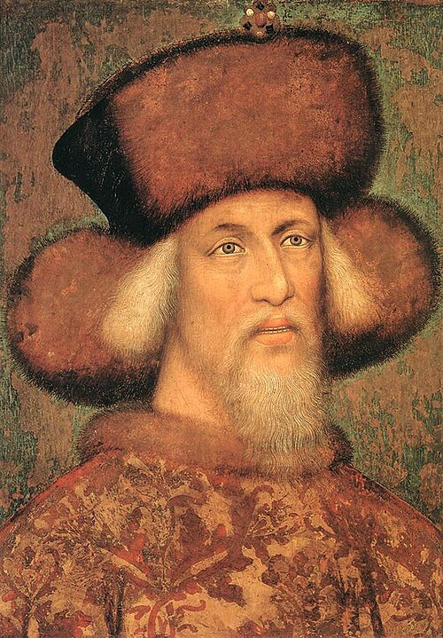
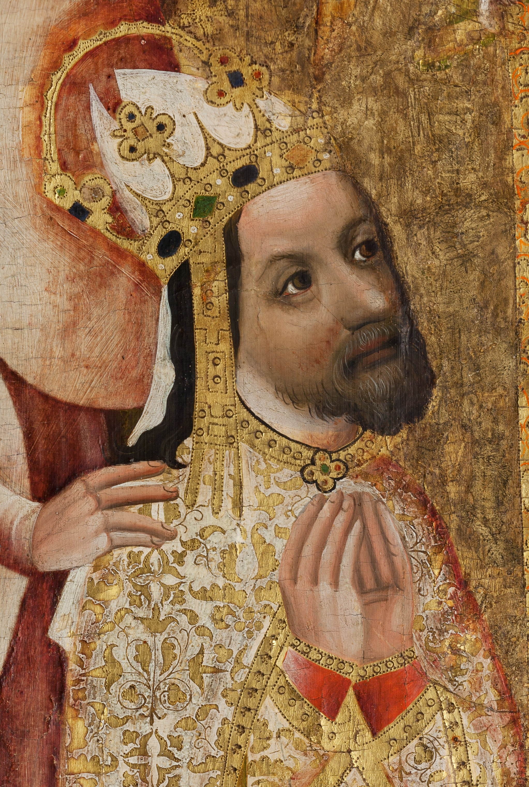
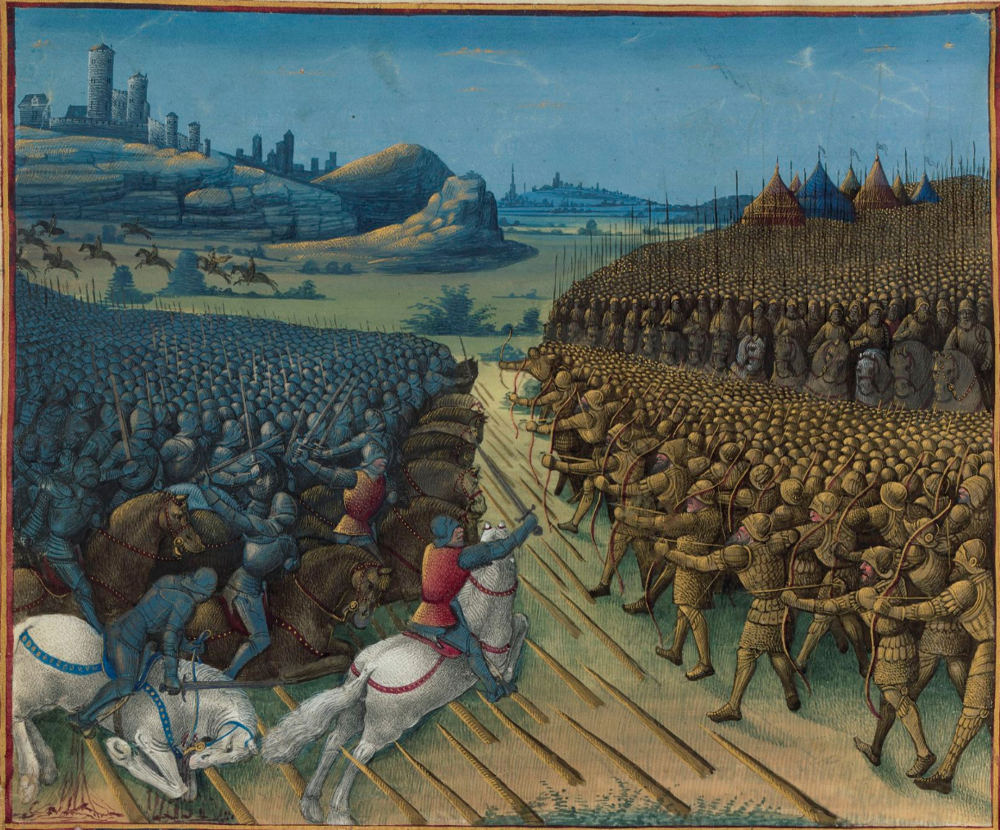
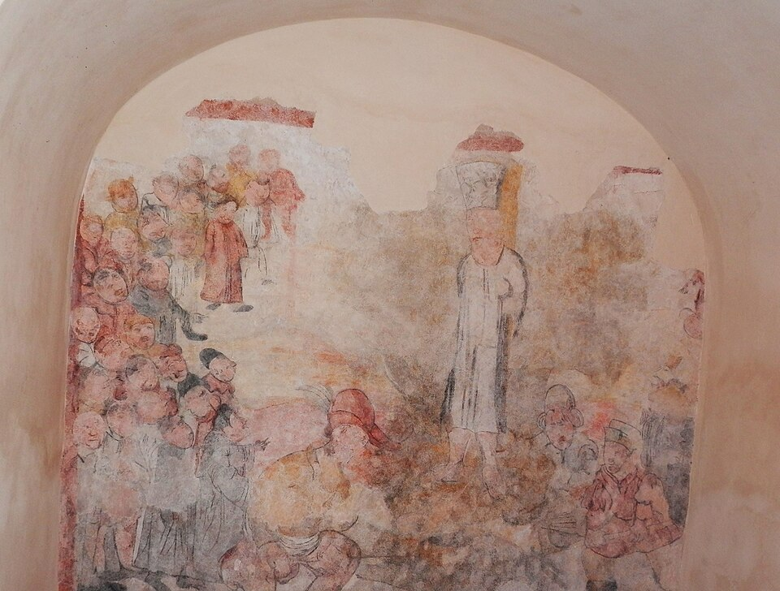
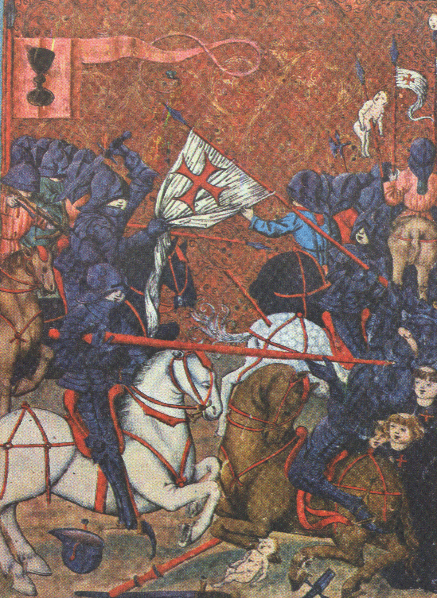

Tato prezentace je optimalizovaná pro desktopy. Pro plný zážitek použijte počítač s prohlížečem Chrome nebo Firefox.

Poslední lucemburský císař (1368–1437)
„Princeps in regno suo non agnoscit superiorem.“ Středověká doktrína svrchovanosti
Karel IV. připravoval syny systematicky na vládu. Zikmund mluvil česky, německy, latinsky, maďarsky, italsky a francouzsky. Tato jazyková výbava z něj udělala jednoho z nejschopnějších diplomatů své doby.

Uherská šlechta byla silná a Zikmund musel vést neustálé kompromisy. Přesto se Uhry staly jeho nejstabilnějším územím — financovaly jeho další politické ambice.
Bitva u Nikopole, 25. září 1396
Poslední velká středověká křížová výprava skončila debaklem. Francouzští rytíři ignorovali Zikmundovu taktiku a vrhli se nepřipraveni na osmanské pozice.
Bajezid I. nechal popravit asi 3000 zajatých křižáků jako odplatu za jejich vlastní masakry. Zikmund si trauma z porážky nesl celý život.

Boj o český trůn
Zikmundův nárok na český trůn byl právně neoddiskutovatelný. Politicky to ale byla mrtvá pozice — husitské Čechy ho nikdy neměly přijmout.
Kostnický koncil 1414–1418
Glejt nebyl porušen formálně (slíbil Husovi cestu do Kostnice, ne návrat), ale morálně ano.
„O sancta simplicitas!“ Husova údajná poslední slova

Husitské války 1419–1434
Husité poprvé v dějinách porazili plnohodnotnou rytířskou armádu pomocí pěchoty s palnými zbraněmi a vozovou pevností. Změnili evropské vojenství.

„Ego sum rex Romanus et super grammaticam.“ Zikmund kostnickému koncilu, když ho opravili v latině.
Kompaktáta byla bezprecedentní — poprvé katolická církev uznala odlišnou liturgickou praxi. Pro Zikmunda to byla 17 let vyjednávání ukončená kompromisem.
„Sit nomen Domini benedictum.“ Údajná poslední slova
Odkaz Zikmunda Lucemburského
Současníci ho nazývali lišák Zikmund — pro vychytralost i nevypočitatelnost. V české historické paměti převažuje negativní obraz, v evropské spíše pozitivní. Jeho smrtí končí jedna éra a začíná habsburská, která potrvá až do roku 1918.
„Constantia et virtute“ Zikmundovo motto — Stálostí a ctností
„Vážené čtené publiko, nalezl jsem ve svých archivech zapomenutý dopis, jehož autorství se připisuje dvorskému kronikáři Zikmunda Lucemburského. Doslovně zní:
„Najjasnější pane, dnes jste při obědě opět podřídil latinský záznam o vlastní korunovaci — tentokrát třikrát. Když Vám to sekretář vytkl, odpověděl jste: ‚Ego sum rex Romanus et super grammaticam!' S veším respektem, pane — kancléř se těmi slovy třese dodnes.“
Kronikář dodává: „Pan císař si také oblíbil novou módu nosit šuly s perlami. Když se ho kdosi ptal, proč to dělá, řekl: ‚Quia possum!' Protože můžu. A nikdo se neopovážil příčit.“
Stiskněte ESC pro návrat